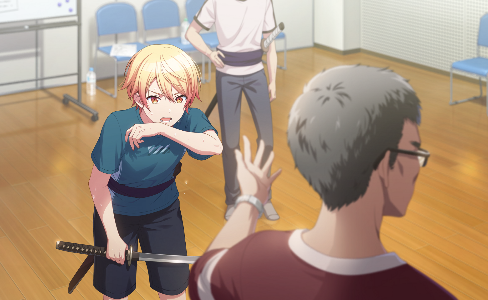
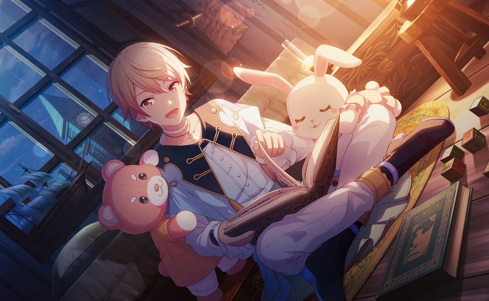

Inicio
Cartas
Personajes
Personaje
aaaaaaa aaaaaaaaaaaaaaaaaaaaaaaa aaaaaaaaaaaaaaaaa aaaaaaaaaaaa aa aaaaaaaaaaaa 2433232423 3242323
Comunidad
Leo/need
MORE MORE JUMP!
Vivid BAD SQUAD
Wonderlands x Showtime
25-ji, Nightcord de.
Iniciar sesión
Opciones de búsqueda
En esta página falta (además de lo de siempre):
Avisar de que he añadido el símbolo de rareza de cumpleaños?
El círculo que contiene el botón de buscar es demasiado grueso porque el light es de pago
Problema: no puedo usar border-radius en bordes degradados
Cómo hacer las tabs con iconos para añadir en la colección y en la lista de deseos
Cómo hacer que dentro de un contenedor de carta se vean ambas versiones partidas por la mitad y centradas
Al hacer lo anterior, añadir un transform al :hover de las cartas para stretchearse a fillear el contenedor
Grupo
Leo/need
MORE MORE JUMP!
Vivid BAD SQUAD
Wonderlands x Showtime
25-ji, Nightcord de.
Rareza
Atributo
Personaje
Aquí va el nombre del personaje seleccionado
Buscar
 